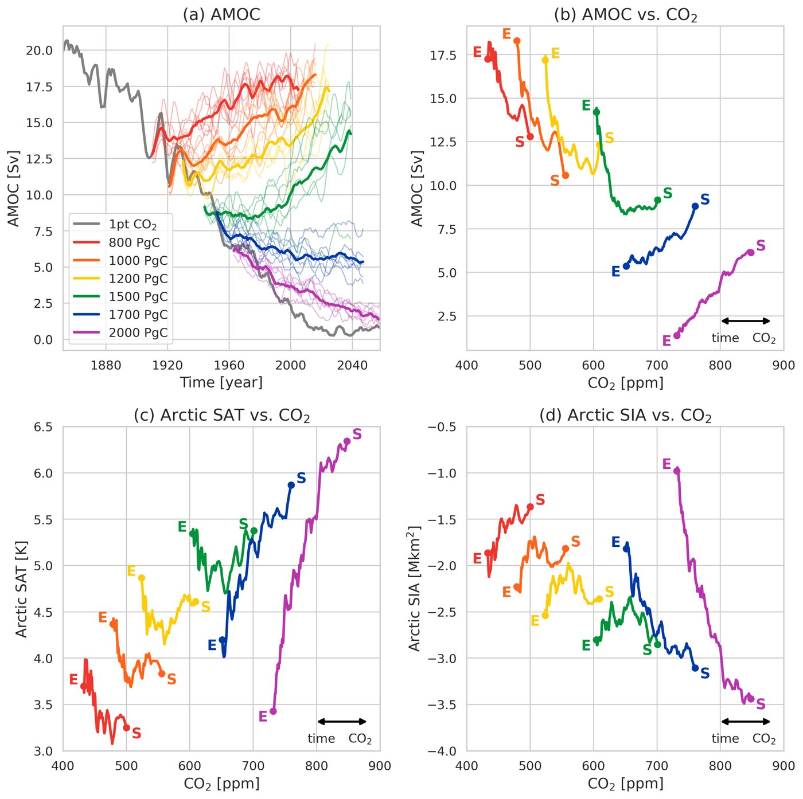

Arctic climate tipping points
bifurcation and stochastic tipping
What happens to the Arctic once CO2 emissions stop? Using Earth system model ensembles in which emissions are cut to zero at cumulative totals of 800–2,000 PgC, I find bifurcating behavior. Below about 1,700 PgC the Arctic keeps warming, while above it a near-collapse of the Atlantic overturning circulation (AMOC) triggers abrupt cooling and sea-ice expansion. This points to stochastic tipping into an alternative Arctic climate state.